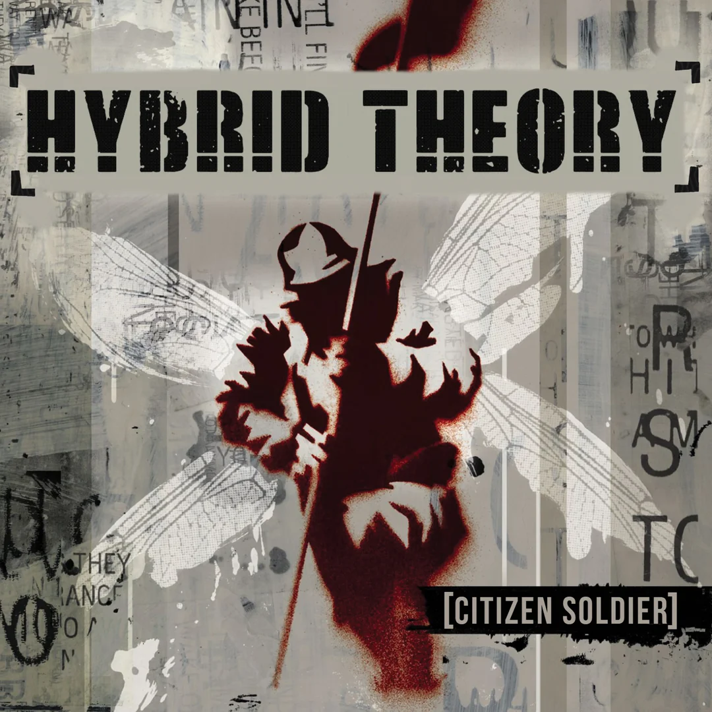
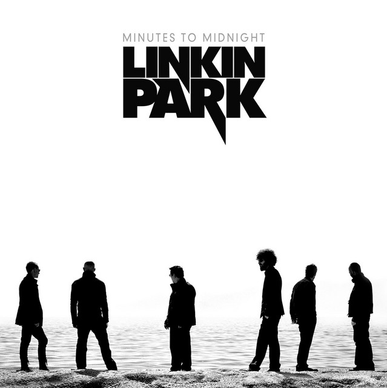
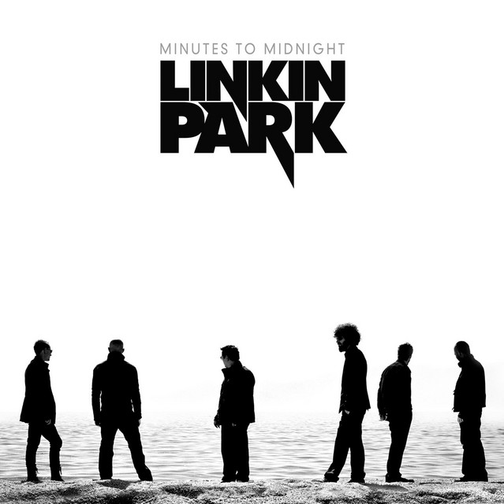
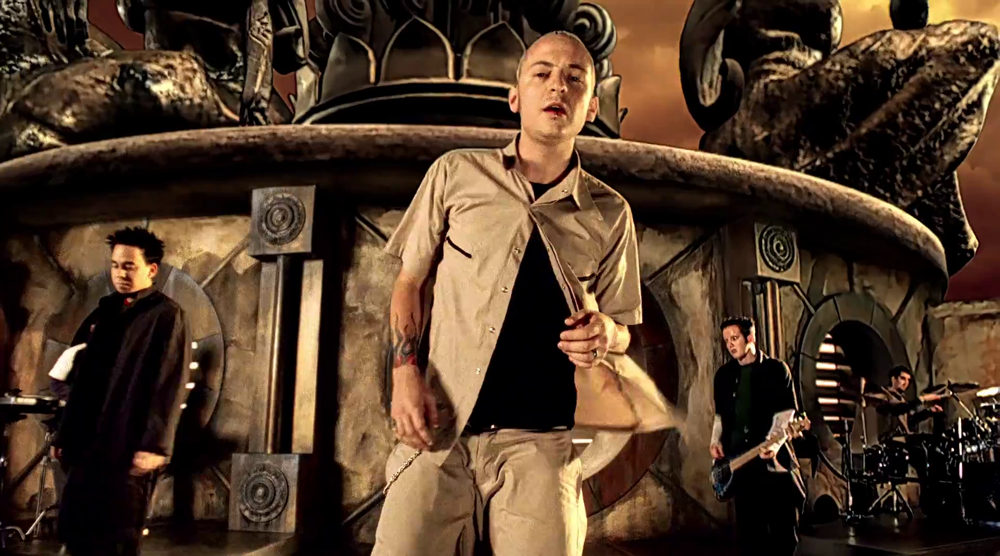
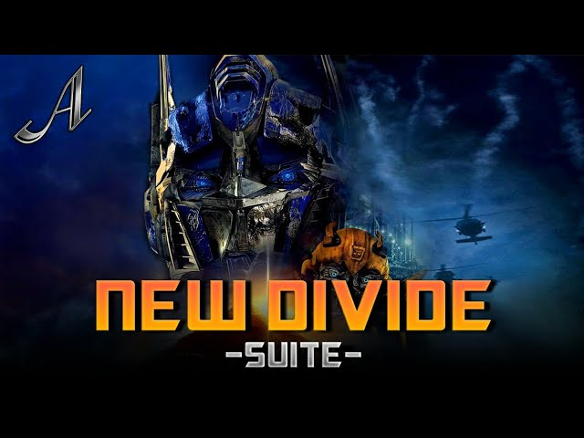
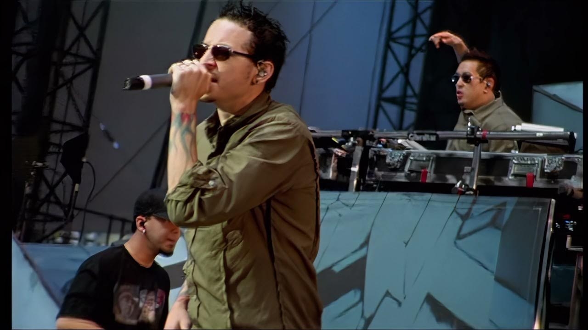
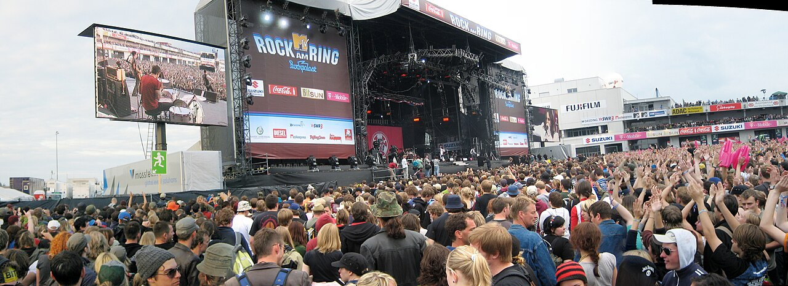

| Los mejores álbumes de Linkin Park: |
- Hybrid Theory (2000)
- Meteora (2003)
- Minutes To Midnight (2007)
|

 

|
Las mejores canciones de Linkin Park |
- Numb
- In the End
- New Divede
|


|
| Los mejores conciertos de Linkin Park con Chester: |
- Linkin Park en vivo en Texas (2003)
- Este concierto inicia con una presentación de Don't Stay y termina con One step close.
- Rock en el ring (2007)
- Este concierto inicia con One Step Closer y terminando con Faint.
- Sonic de verano en Tokyo (2006)
- Este inicia con Numb para terminar con una versión para piano de Breaking The habit.
|


|